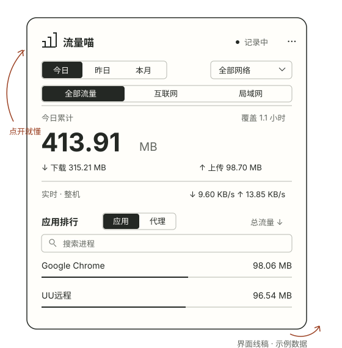

今天用了多少？
今日、昨日、本月自由切换。整机总量、下载和上传分开看，覆盖时间也清清楚楚。
时间筛选 / 累计统计给 Mac 的一本小账本 · v1.3.4
谁在下载？谁在上传？
点开菜单栏，把每一笔流量的去向理清楚。
应用体积约 1 MB · macOS 13+ · Apple Silicon

01 / 从总量，看到来源
今日、昨日、本月自由切换。整机总量、下载和上传分开看，覆盖时间也清清楚楚。
时间筛选 / 累计统计搜索进程名称，按总量、下载或上传排序。可识别的 App 辅助进程合并查看。
进程搜索 / 流量排行按真实 Wi-Fi 名称筛选。你可以拒绝定位权限，继续在“全部网络”下记录。
真实 SSID / 可选授权02 / 轻巧地装进菜单栏
原生应用，不内嵌浏览器内核。
下载、解压、拖入应用程序，就能开始记录。
¹ 约 1 MB 指当前 arm64 应用的安装体积，不含本地历史文件；不同构建会略有差异。
03 / 数字也要读得明白
同一份数据可能被多个进程记录。进程排行不要相加作为整机总量。
网卡计数包含局域网流量，不能替代运营商账单。记录从应用运行时开始，过去的流量无法补算。
解压 arm64 ZIP 后启动，首次运行约 10 秒建立基线。
定位权限仅用于读取网络名称，不请求坐标；拒绝也可以继续记录全部网络。
左键打开统计，右键暂停／继续、登录启动或导出 CSV。每分钟保存一次历史。
还有几个小问题
不会。历史保存在本机的 ledger.json 中，不记录通信内容，不包含遥测。导出的 CSV 由你选择保存位置。
当前应用为临时签名、未进行 Developer ID 签名和公证。确认下载来源后，可按系统设置“隐私与安全性”的提示允许打开，无需关闭系统安全功能。
先退出旧版再替换应用。历史路径不变，替换应用不会删除记录。
当前发布包支持 Apple Silicon、macOS 13+。Intel 可尝试源码构建但未验收。采样可能漏计短时进程和网络切换间隔，不能用于精确计费。
构建、签名与 30 项核心统计检查通过，本机采样已运行。完整菜单栏交互、权限弹窗和面板开关循环尚未现场验收。